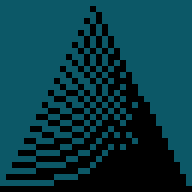

Bigger Projects
Merit (College) Prep Accademy Media Archive United Sesquipedalian WikiParu

Snowfall

Tower of Gable - Version 14

Tower of Gable Definitive Edition - Alpha 1
Enter Bean Selector Prjekt IllipoProjects List
Paru
Snowfall

Tower of Gable - Version 14

Tower of Gable Definitive Edition - Alpha 1